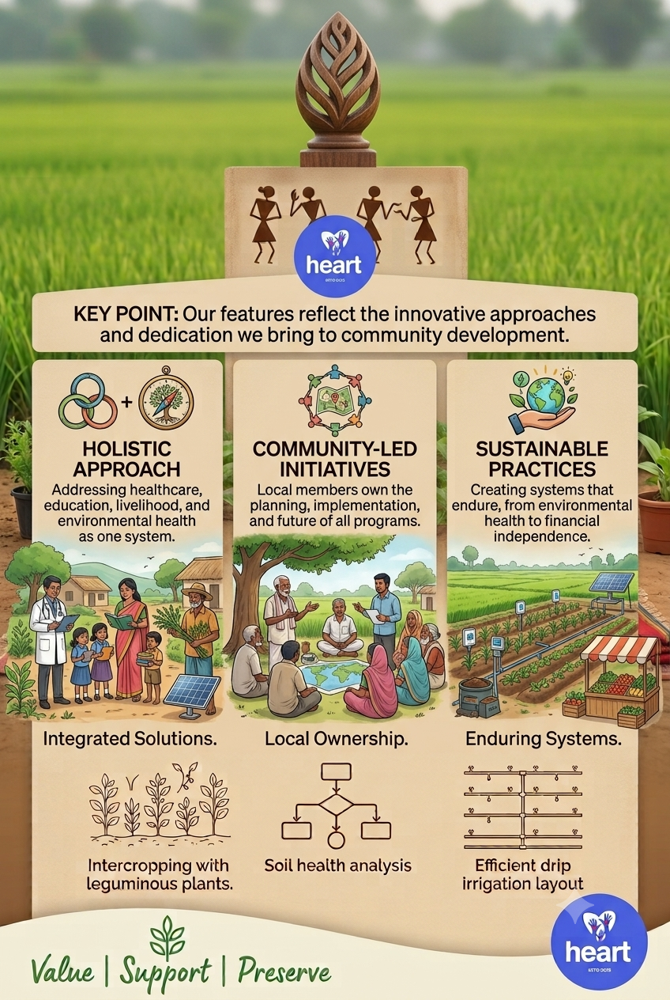

Holistic Approach
We adopt a holistic approach addressing multiple aspects of life, ensuring comprehensive support.
Home » About
Our features reflect the innovative approaches and dedication we bring to community development.

Our features reflect the innovative approaches and dedication we bring to community development.
We adopt a holistic approach addressing multiple aspects of life, ensuring comprehensive support.
Our programs are designed with active participation from community members, ensuring their needs and insights shape our efforts.
We prioritize sustainability in all our initiatives, focusing on long-term viability and local resource management.
Testimonials